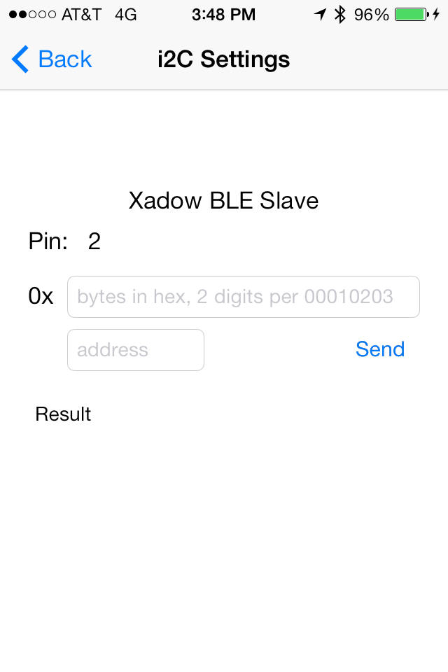
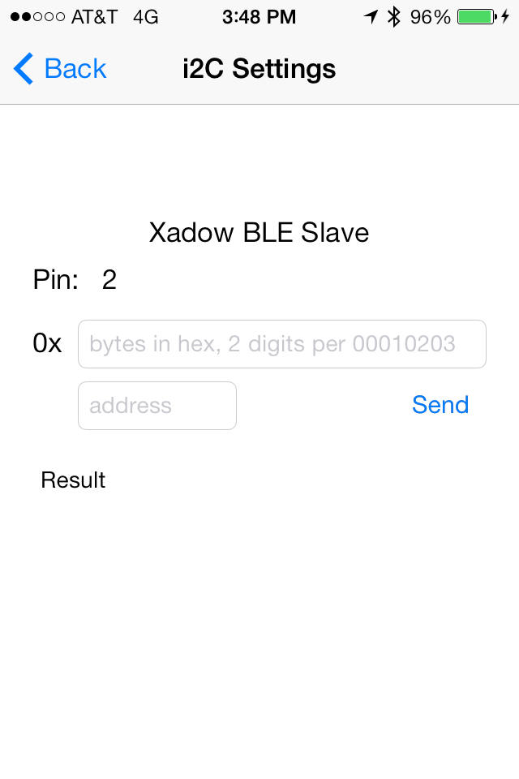

Description
A basic firmata host implmentation for idevices over BLE. Includes a firmata host implementation that allows you to test your firmata setup and do some basic operations.
Currently supports the Seeed Studio Xadow BLE device as well as the Redbear device. Should support many other devices with few changes.The Xadow is a Leonardo style arduino part. It was necessary to change the StandardFirmata class to use Serial1 instead of Serial.
Important: This project requires a Bluetooth LE Capable Device (iPhone 4s and later; iPad 3 and later; iPod Touch 5; iPad mini) and will not work on the simulator.
BUILD REQUIREMENTS:
- Xcode 5 or greater
- iOS 7 SDK or greater
RUNTIME REQUIREMENTS:
- iOS 6 or later Bluetooth LE Capable Device Bluetooth LE Sensor/s
Install it the hard way
A dependancy of this code is the OpenBLE cocoapod to manage your Ble service
Download iFirmata and OpenBLE and copy everything in /Classes into your xcode project. Or more preferrably use cocoapods to get both at the same time.
Install it via Cocoapods
Create a new xcode project or workspace or go to your existing, open a terminal in that directory, and type:
sudo gem install cocoapods
touch Podfile
echo -e "platform :ios, '5.0'\npod 'iFirmata'" >> Podfile
pod installIt should complete and tell you to utilize the .xcworkspace from now on.
Use it
Click on that xcworkspace file to open your project from now on and youll find your project with the source code all loaded up. Now you can:
#import "Firmata.h"And have your class register as a Firmata protocol:
@interface DetailViewController : UIViewController <FirmataProtocol>
@endSee the OpenBLE cocoapod to see how to scan and connect to a bluetooth service with read and write characteristics. Then you can init a firmata object with it:
Firmata *currentFirmata = [[Firmata alloc] initWithService:service controller:dest];And make some sort of call like analog mapping query to find all the:
[currentFirmata analogMappingQuery];When the BLE returns to firmata, it will parse it and return a delegate so set up a delegate function:
- (void) didUpdateAnalogMapping:(NSMutableDictionary *)analogMapping
{
for (NSString* key in analogMapping) {
NSLog(@"key: %@ value: %@", key, [analogMapping objectForKey:key]);
}
}Example app
Open the example app in /examples for a much more thorough implementation example. It lists bluetooth devices, connects, and when it recieves read and write characteristics segues to a screen where you set pin modes, set or read pins, control servos and pwm and even send i2c data.

 

Support or Contact
Use the github issues queue https://github.com/iFirmata/iFirmata/issues to report bugs or contribute code.